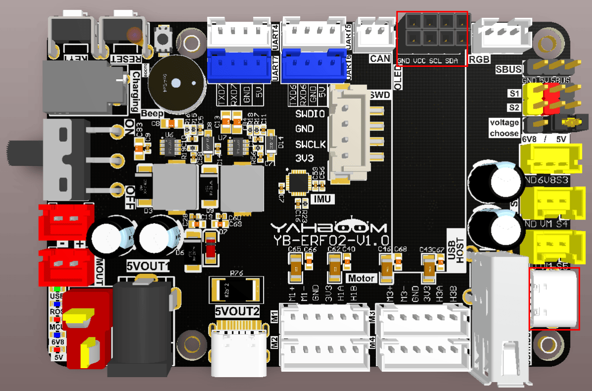
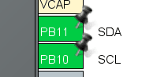
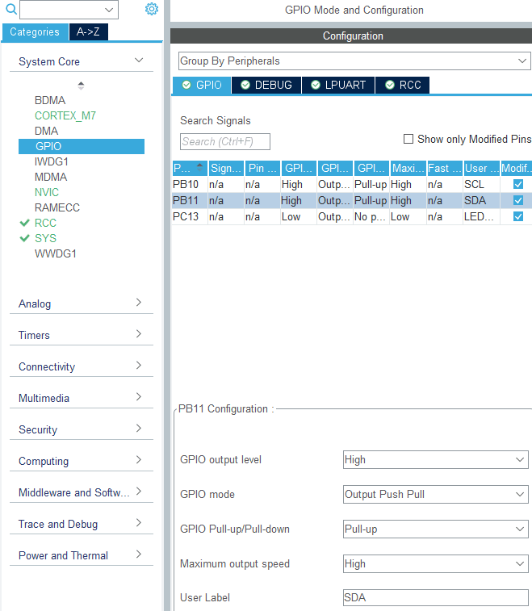
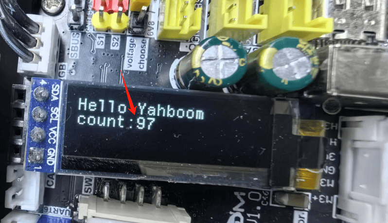

Управление OLED-дисплеями
- Цель эксперимента
- Подключение оборудования
- Анализ основного кода
- Компиляция, загрузка и прошивка firmware
- Результаты эксперимента
1. Цель эксперимента
Используя функцию программного (аналогового) I2C платы управления STM32, изучить управление OLED-экраном.
2. Подключение оборудования
Как показано на рисунке ниже, плата управления STM32 имеет встроенный интерфейс для OLED, но сам OLED-дисплей нужно подключить отдельно. Подготовьте свой OLED-дисплей и подключите USB-кабель Type-C между компьютером и портом USB Connect на плате управления STM32.
Используйте 0.91-дюймовый OLED-дисплей с протоколом связи I2C.
Оба ряда контактов выполняют одинаковую функцию. Выберите любой из них, совместите с шелкографией на разъёме и подключите.

3. Анализ основного кода
Путь к исходному коду программы:
Board_Samples/STM32_Samples/OLED
В соответствии с назначением выводов, вывод SCL OLED-экрана подключён к PB10, а вывод SDA — к PB11. Поскольку используется программная реализация I2C, оба вывода PB10 и PB11 инициализируются в режиме push-pull с подтяжкой вверх (pull-up).


#define SCL_Pin GPIO_PIN_10
#define SCL_GPIO_Port GPIOB
#define SDA_Pin GPIO_PIN_11
#define SDA_GPIO_Port GPIOB
#define SDA_IN() {GPIOB->MODER&=~(3<<(11*2));GPIOB->MODER|=0<<11*2;}
#define SDA_OUT() {GPIOB->MODER&=~(3<<(11*2));GPIOB->MODER|=1<<11*2;}
#define IIC_SCL(a) HAL_GPIO_WritePin(SCL_GPIO_Port, SCL_Pin, a)
#define IIC_SDA(a) HAL_GPIO_WritePin(SDA_GPIO_Port, SDA_Pin, a)
#define READ_SDA HAL_GPIO_ReadPin(SDA_GPIO_Port, SDA_Pin)
В соответствии с требованиями протокола связи OLED-экрана, для управления OLED-экраном здесь используется программный (software) I2C. Запись строки данных по I2C.
uint8_t IIC_Write_Len(uint8_t addr, uint8_t reg, uint8_t len, uint8_t *buf)
{
uint8_t i;
IIC_Start();
IIC_Send_Byte((addr << 1) | 0);
if (IIC_Wait_Ack())
{
IIC_Stop();
return 1;
}
IIC_Send_Byte(reg);
IIC_Wait_Ack();
for (i = 0; i < len; i++)
{
IIC_Send_Byte(buf[i]);
if (IIC_Wait_Ack())
{
IIC_Stop();
return 1;
}
}
IIC_Stop();
return 0;
}
Запись одного байта данных по I2C.
uint8_t IIC_Write_Byte(uint8_t addr, uint8_t reg, uint8_t data)
{
IIC_Start();
IIC_Send_Byte((addr << 1) | 0);
if (IIC_Wait_Ack())
{
IIC_Stop();
return 1;
}
IIC_Send_Byte(reg);
IIC_Wait_Ack();
IIC_Send_Byte(data);
if (IIC_Wait_Ack())
{
IIC_Stop();
return 1;
}
IIC_Stop();
return 0;
}
Инициализация параметров OLED-дисплея.
uint8_t SSD1306_Init(void)
{
/* A little delay */
uint32_t p = 2500;
while (p > 0)
p--;
/* Init LCD */
SSD1306_WRITECOMMAND(0xae); // display off
SSD1306_WRITECOMMAND(0xa6); // Set Normal Display (default)
SSD1306_WRITECOMMAND(0xAE); // DISPLAYOFF
SSD1306_WRITECOMMAND(0xD5); // SETDISPLAYCLOCKDIV
SSD1306_WRITECOMMAND(0x80); // the suggested ratio 0x80
SSD1306_WRITECOMMAND(0xA8); // SSD1306_SETMULTIPLEX
SSD1306_WRITECOMMAND(0x1F);
SSD1306_WRITECOMMAND(0xD3); // SETDISPLAYOFFSET
SSD1306_WRITECOMMAND(0x00); // no offset
SSD1306_WRITECOMMAND(0x40 | 0x0); // SETSTARTLINE
SSD1306_WRITECOMMAND(0x8D); // CHARGEPUMP
SSD1306_WRITECOMMAND(0x14); // 0x014 enable, 0x010 disable
SSD1306_WRITECOMMAND(0x20); // com pin HW config, sequential com pin config
(bit 4), disable left/right remap (bit 5),
SSD1306_WRITECOMMAND(0x02); // 0x12 //128x32 OLED: 0x002, 128x32 OLED 0x012
SSD1306_WRITECOMMAND(0xa1); // segment remap a0/a1
SSD1306_WRITECOMMAND(0xc8); // c0: scan dir normal, c8: reverse
SSD1306_WRITECOMMAND(0xda);
SSD1306_WRITECOMMAND(0x02); // com pin HW config, sequential com pin config
(bit 4), disable left/right remap (bit 5)
SSD1306_WRITECOMMAND(0x81);
SSD1306_WRITECOMMAND(0xcf); // [2] set control contrast
SSD1306_WRITECOMMAND(0xd9);
SSD1306_WRITECOMMAND(0xf1); // [2] pre-charge period 0x022/f1
SSD1306_WRITECOMMAND(0xdb);
SSD1306_WRITECOMMAND(0x40); // vcomh deselect level
SSD1306_WRITECOMMAND(0x2e); // Disable scroll
SSD1306_WRITECOMMAND(0xa4); // output ram to display
SSD1306_WRITECOMMAND(0xa6); // none inverted normal display mode
SSD1306_WRITECOMMAND(0xaf); // display on
/* Clear screen */
SSD1306_Fill(SSD1306_COLOR_BLACK);
/* Update screen */
SSD1306_UpdateScreen();
/* Set default values */
SSD1306.CurrentX = 0;
SSD1306.CurrentY = 0;
/* Initialized OK */
SSD1306.Initialized = 1;
/* Return OK */
return 1;
}
Отрисовка пикселя в буфер данных.
void SSD1306_DrawPixel(uint16_t x, uint16_t y, SSD1306_COLOR_t color)
{
if (x >= SSD1306_WIDTH || y >= SSD1306_HEIGHT)
{
return; // Error, out of scope
}
/* Check if the pixel is Inverted*/
if (SSD1306.Inverted)
{
color = (SSD1306_COLOR_t)!color;
}
/* set colors */
if (color == SSD1306_COLOR_WHITE)
{
SSD1306_Buffer[x + (y / 8) * SSD1306_WIDTH] |= 1 << (y % 8);
}
else
{
SSD1306_Buffer[x + (y / 8) * SSD1306_WIDTH] &= ~(1 << (y % 8));
}
}
Заполнение всего буфера данных полностью выключенным или полностью включённым состоянием.
void SSD1306_Fill(SSD1306_COLOR_t color)
{
/* Set memory */
memset(SSD1306_Buffer, (color == SSD1306_COLOR_BLACK) ? 0x00 : 0xFF,
sizeof(SSD1306_Buffer));
}
Запись данных из буфера на OLED-экран.
void SSD1306_UpdateScreen(void)
{
uint8_t m;
for (m = 0; m < 8; m++)
{
SSD1306_WRITECOMMAND(0xB0 + m);
SSD1306_WRITECOMMAND(0x00);
SSD1306_WRITECOMMAND(0x10);
/* Write multi data */
ssd1306_I2C_WriteMulti(SSD1306_I2C_ADDR, 0x40,
&SSD1306_Buffer[SSD1306_WIDTH * m], SSD1306_WIDTH);
}
}
При включении устройство отображает текст "Hello Yahboom" и обновляет отображаемое содержимое каждую 1 секунду. Значение счётчика увеличивается на 1 при каждом обновлении.
void App_Handle(void)
{
int print_count = 0;
HAL_Delay(100);
char text_1[] = "Hello Yahboom";
SSD1306_Init();
OLED_Draw_Line(text_1, 1, 1, 1);
printf("Hello Yahboom\n");
while (1)
{
print_count++;
if (print_count % 100 == 0)
{
char text_2[20] = {0};
sprintf(text_2, "count:%d", print_count/100);
OLED_Draw_Line(text_1, 1, 1, 0);
OLED_Draw_Line(text_2, 2, 0, 1);
printf(text_2);
printf("\n");
}
App_Led_Mcu_Handle();
HAL_Delay(10);
}
}
4. Компиляция, загрузка и прошивка firmware
Выберите проект для компиляции в окне управления файлами STM32CUBEIDE и нажмите кнопку компиляции на панели инструментов, чтобы начать компиляцию.


Если ошибок и предупреждений нет, компиляция завершена успешно.
Нажмите и удерживайте кнопку BOOT0, затем нажмите кнопку RESET для перезагрузки, отпустите кнопку BOOT0, чтобы войти в режим прошивки через последовательный порт. Затем используйте утилиту прошивки через последовательный порт, чтобы записать firmware на плату.
Если у вас есть ST-Link или J-Link, вы также можете прошить firmware в один клик прямо из STM32CUBEIDE — это более удобно и быстро.
5. Результаты эксперимента
Светодиод MCU_LED мигает каждые 200 миллисекунд.
Информация на OLED-экране обновляется каждую секунду, и при каждом обновлении значение счётчика увеличивается на 1.
